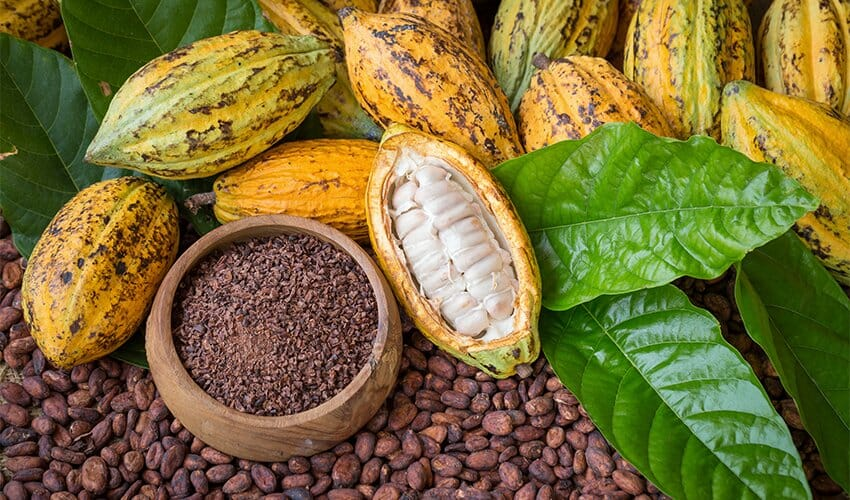
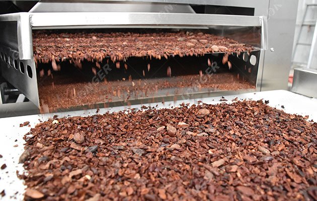
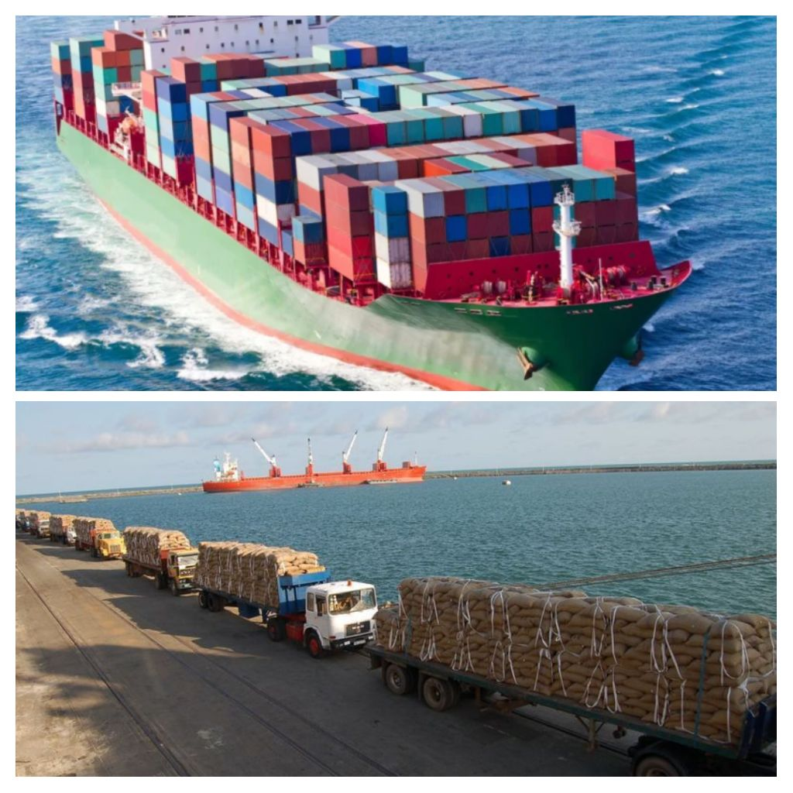
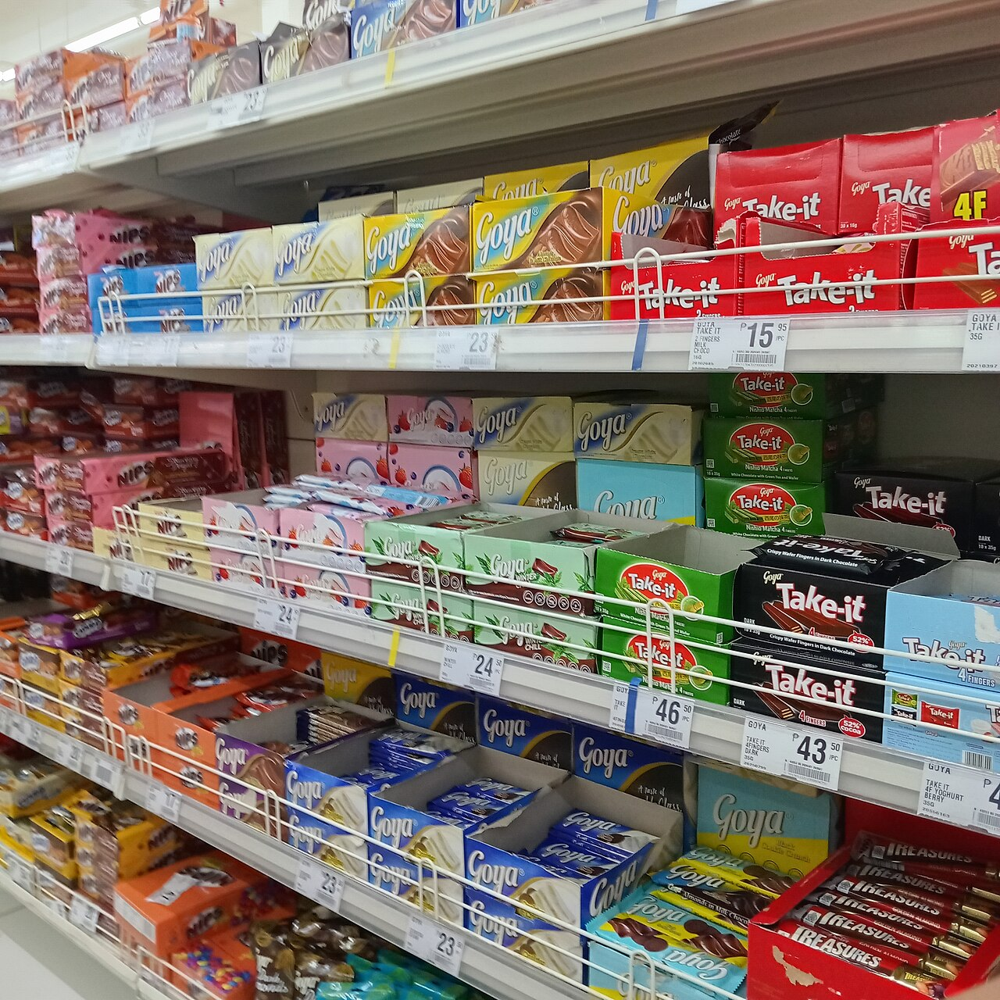
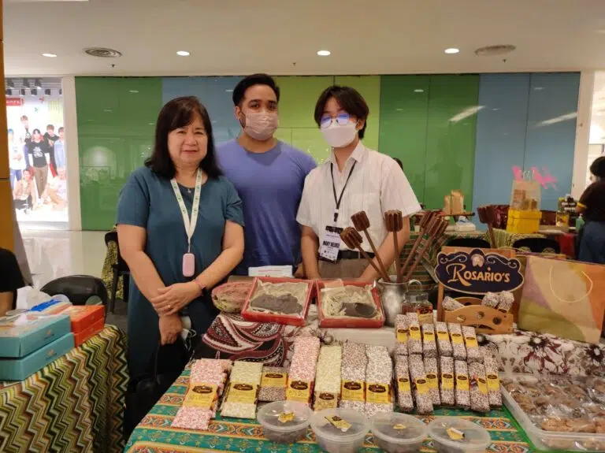

Raw Materials
Côte d’Ivoire
- Cocoa beans are grown and exported to Malaysia.

Add your photo here
Search: Cocoa farming and harvested cocoa beans in Côte d’Ivoire.
Save as: cocoa-farming.jpg
My Globalization Atlas
03 / 10
Every product has a journey. Follow the connection from its starting materials to the Filipino consumer.
Product: Chocolate
Select a stage to see its details.
Côte d’Ivoire

Add your photo here
Search: Cocoa farming and harvested cocoa beans in Côte d’Ivoire.
Save as: cocoa-farming.jpg
Malaysia

Add your photo here
Search: Cocoa beans being processed and ground in a factory.
Save as: cocoa-processing.jpg
Malaysia
Add your photo here
Search: Chocolate products being manufactured in a factory.
Save as: chocolate-manufacturing.jpg

Add your photo here
Search: Cargo ships or shipping containers transporting goods internationally.
Save as: transportation.jpg
Philippines

Add your photo here
Search: Chocolate products displayed in a Philippine grocery store.
Save as: philippine-market.jpg

Add your photo here
Search: A Filipino consumer buying chocolate from a local store.
Save as: filipino-consumer.jpg
Countries Involved
Who Benefits?
Problems
How Are They Connected?
Note: Trade data does not prove that every chocolate product imported from Malaysia uses cocoa from Côte d’Ivoire.